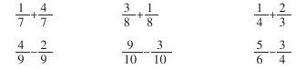

加强学法指导，教学生“会学” [1]
现代教学论认为，教学的基本任务不仅是传授知识，培养能力，而更重要的是教给学生获取知识的方法。学生一旦掌握了“方法”这把金钥匙，就会兴趣盎然、自由自在地在知识的海洋中摄取，真正成为学习的主人，就会学习，会生存，会创造。
小学生学习数学知识一般有两种基本的认知策略：
一是“从具体的材料中发现规律”的认知策略。对于全新的或与旧知识联系不大的知识，教师要给学生提供足够的感性材料，精心设计问题情境，引导学生多种感官参与学习活动，经历从具体到抽象、从感性到理性的认识过程，体会获取知识的过程和方法，逐步学会操作、观察、分析、比较、综合、抽象、概括及判断推理的方法。
二是“把未知转化为已知”的认知策略。对于新旧联系紧密的知识，教师要找准知识的连接点和生长点，利用迁移规律的同化原理，精心设计“铺垫题”，在新旧知识的连接点、分化点、关键处设计有坡度、有层次、有启发性、符合儿童认知规律的系列问题，引导学生运用旧知学习新知，从而学会迁移，学会学习。
在引导学生运用两种认知策略学习新知的过程中，必须注重以下五方面的指导：
1.指导操作。素质教育的核心是发挥人的主观能动性，发挥学生的主体作用。操作，人人动手，思维随之而展开，很容易把全体学生推到学习的主体地位。不仅便于小学生理解数学概念和计算方法的算理，而且有利于发挥学生学习的主动性和积极性，有助于培养学生动手操作能力，促进学生的全面发展。如学习“除法的意义”，只有当学生用小棒、圆片……自己去分一分，这才逐步悟出了什么是平均分，什么不是平均分，哪个是要分的总数，哪个是分成的份数或每份是多少。教学乘法的初步认识，通过摆物品，使学生弄清几个几连加，怎样用乘法表示。教学两位数加一位数、整十数，通过摆小棒，使学生弄清为什么算34+2时把4和2相加，而算34+20时，要把30和20相加，理解相同单位的数相加的道理。教学应用题，通过操作，引导学生分析数量关系等。这样教学，符合儿童认知规律，学生爱学，并且学习效率高。当然，在指导学生操作时要注意：操作前要让学生明确操作目的、要求和程序；操作中要求学生边操作边思考；操作后要引导学生利用表象、运用语言再现操作过程和结果，把操作同思维、语言表达紧密结合起来。
2.指导观察。数学观察是对数学问题在客观情况下考察其数量关系和图形性质的一种方法。小学数学内容中数、形等概念和运算性质，大多数在客观现实世界中都有他们的原型，都可能通过观察让学生去发现。义务教材给学生提供了广阔的视觉空间，有观察插图的，有观察算式的，有观察计算过程的。教师要指导学生按一定的顺序或思路观察，边观察边思考，并用数学语言表达观察结果。如数学第一册1～10各数认识的主题图，教师要引导学生从不同角度进行观察，一方面进行认数、数的组成等数学知识的学习，另一方面结合图形进行思想品德教育。教学“用整十数乘”，让学生观察得数与被乘数有什么关系，从而让学生自己得出“一个数乘以10，只在这个数的后面添一个零就行”的结论。当学生发现了这个规律后，算同类型的题，就可以类推。教学长方体的初步认识，让学生观察它有几个面，每个面是什么形，从而掌握长方体的特征。
3.指导思考。数学是“思维的体操”，是思考的学问。小学数学课堂教学主要是数学思维活动的教学，而不单单是数学知识的教学。一个学生的思维能力程度，标志着他的素质水平，同时也直接制约着其获取知识技能的速度、广度和深度，影响着解决问题的质量、水平和效率。因此，教师要有意识地长期训练和培养学生的思维能力。这里强调两点：
第一，要采取不同的方式指导
（1）要抓住新旧知识间的矛盾冲突指导。如教学“异分母分数加减法”一课时，首先要求学生口算三组题：
前两组口算题为旧知识，学生很容易算出结果，当出示第三组题时，学生感到茫然，新旧知识的矛盾出现，这时，教师要因势利导地介绍“异分母的分数”并启发学生思考，能否利用旧知识将异分母的分数转化为同分母的分数，然后计算出得数？进而转入新课学习。这一教学环节，虽不属新授知识的正题，但是它是认知思维的转折点，是形成新知结构的桥梁，学生“知困，然后学”印象深，记得牢。

（2）创设“问题情境”进行指导。如教三位数乘法时，在已有两位数乘法的基础上，让学生带着“乘数百位上的数和被乘数各个数位上的数相乘，得数应该写在哪一位下面？为什么？”这个问题，自己看书，推导法则。在进行“小数乘法”和“分数的意义”教学时，教师提出问题：为什么在小数乘法中，被乘数和乘数共有几位小数，就从积的末尾向左数几位点上小数点？单位“1”的1为什么加双引号？这些问题书上没有现成答案，学生只有认真思考，共同讨论后才能解答。
（3）运用“操作”进行指导。如“9加几”的教学，在做准备题的基础上，教师可以按这样的层次指导：①通过直观演示、操作，计算9+2，形成“凑十过程”的表象；②摆一摆，算一算，9+3=□，9+7=□，巩固“凑十”的思路；③边摆边算9+4=□，9+8=□，提高计算的熟练程度，简缩思维过程；④脱离直观，“想一想”，计算9+5=□，9+6=□，9+9=□，直接运用“凑十法”计算出得数。这四个教学层次，完全是按照儿童的认知规律“动作、感知→表象→概念、符号”安排的。同学们乐学的情趣十分高涨，教学过程既满足了学生心理上的需要，又掌握了“凑十”的规律，也为后面运用迁移规律学习8加几，7加几……打好基础。
（4）利用“框图”进行指导。“框图”是按照一定的思维路线进行的，利用“框图”可以帮助学生加深理解所学的计算或解题的方法，促进学生思维的条理化。
（5）挖掘教材中潜在的智力因素进行指导。义务教材中多处有说、想的内容，如“整理和复习”，都是让学生想一想，说一说，把所学的内容进行系统整理，使学生对本单元所学的内容有比较清楚地认识，同时再与旧知识联系起来，形成知识的网络。学习分数大小的比较，先让学生“想”算理，再让学生“想一想”：上面每组分数中的两个分数有什么共同的地方？分母相同的两个分数怎样比较大小？以培养学生的分析、概括能力。义务教材着眼于提高学生素质，为学生营造了一个个知识开发区、智力开发区和情感开发区，导向性十分明显，不仅小学生喜欢，广大教师也喜欢。因此要充分利用。
第二，要注意思考方法的指导
在数学课堂教学中，常见的思考方法有：
（1）归纳法。归纳法是学生完成抽象概括任务的基本方法。小学数学教材中的多数概念、法则都是采用这种方法抽象出来的。如圆周率概念的建立，先通过教师的演示、学生的操作，考察不同直径的圆：直径5厘米的圆，周长15厘米多一些，直径10厘米的圆，周长30厘米多一些，直径是12厘米的圆，周长36厘米多一些……通过上述的实践活动可以引导学生抽象直径不同的圆所存在的共的本质属性——圆的周长是直径的3倍多一些，进而抽象出圆周率的概念。
（2）转化法。转化法是知识构建过程中的关键一环。数学教材中，大量新知识都是在已有知识的基础上进行学习的。新旧知识之间存在着一个关键的环节，只要使之顺利地转化，新知识就纳入了已有知识的轨道，实现了新旧知识的同化，形成新的知识结构。如推导平行四边形面积计算公式是把平行四边形转化成长方形来推导；推导三角形、梯形面积计算公式，是把它们转化成平行四边形再推导等。
（3）类推法。类推法是从个别到个别的推理方法。数学知识存在着许多相近的和相关的知识。它们之间有着密切的联系，存在着很多相同的属性。例如，比、分数、除法之间存在着很多共同的属性，除法中有商不变的性质，分数中有分数基本性质，那么根据三者的关系，你能不能预测一下，比应该有什么样的性质？通过类推使新知识迅速内化，学生在完整的数学知识系统上获得了新知识，有助于培养学生举一反三、触类旁通的能力。在数学教学中不仅知识上存在类推，在思维方法上也广泛存在着类推。学生只要掌握了类推方法就会促进学生独立获取知识的能力。
当然还有许多指导的形式和思考方法，是就不赘述了。
（4）指导语言表达。俗话说：“言为心声”，人们思维的结果，认识活动的成就都是通过语言表达出来的，语言和思维发展有着十分密切的关系。尤其是低年级学生，他们还不善于思考问题，这就需要借助外部语言来帮助学生思维。可见，指导学生的语言表达是多么的重要。
进行语言表达指导，首先要激励学生敢想，敢说，把自己听到的、看到的、想到的或不明白的都说出来，要畅所欲言。有些学生开始可能说不完整，说不清楚，教师不要急于求成，要在帮助学生把话说准确、说明白的同时，继续鼓励他们说，以培养他们善于表达的习惯。
在课堂讨论时，要采取不同形式，如同座位互相说、指名说、全班一起说，自言自语地说等，在相互交流的过程中，磨炼自己的语言，促使思维更加精确。教师要引导学生在学习新概念时说新概念的内容和自己的理解；学习计算法则，要结合具体计算说计算的方法、根据及计算步骤；学习验算，要说出验算的方法、依据等。
另外，还要注意不同年级语言表达应有不同要求；低年级可以要求学生先想后说，用完整的语言来表达；中年级可以要求学生有条理地、连贯地说明自己的思维过程；高年级则可逐步运用数学语言，准确、简练、并且有根有据地时行表达。
在语言表达指导方面，教师的语言应该是学生的表率，教师的语言力求用词准确、简明扼要、条理清楚、前后连贯、逻辑性强。要通过教师语言的示范作用，对学生的初步逻辑能力的形成施以良好的影响。
（5）指导质疑问难。要求学生积极参与问题的讨论，在讨论中多动脑筋，多方面思考问题，听取别人意见，提出不同见解。教师可以通过设疑，逐步培养学生发现问题，质疑问题的习惯和创造性思维，发挥学习各自的内在潜能，使个性得到发展。
总之，加强学法指导，是时代的需要，也是小学数学落实素质教育的重要方面。只要教师确立了正确的教育观念，不断提高自身素质，热爱学生，热爱自己的事业，用自己的感情、精神、毅力、想象、语言、能力和技巧感染学生，善于利用儿童心理和数学教育规律组织教学，就能实现学生由“学会”到“会学”的转化，就能达到素质教育的目标，适应时代发展的需要。